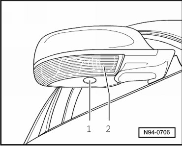

Turn Signal Lamp: Description and Operation
Exterior Rearview Mirror Turn Signal and Entry Lamp
General Description:
Exterior mirror turn signal lamps (side turn signal lamps) are installed in exterior mirror housing.
In addition, there is one entry lamp each in exterior mirror housings which illuminate the dark entry area around opened driver's and front passenger's door.

1 Driver's Entry Lamp (in outside mirror) (W52) and Front Passenger's Entry Lamp (in outside mirror) (W53)
2 Driver's Exterior Mirror Turn Signal Lamp (L131) and Front Passenger's Exterior Mirror Turn Signal Lamp (L132)
DTC recognition and display:
Comfort system is equipped with On Board Diagnostics (OBD), which assists troubleshooting of exterior mirror turn signal lamp and entry lamps in exterior mirror.
For troubleshooting, use Vehicle Diagnostic, Testing and Information System (VAS 5051A) in operating mode " Guided Fault Finding".